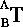
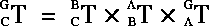
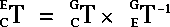

can be notated like this:
, and the inverse of this transformation like :
 . We can say:
. We can say:
Geometry is the data which defines the locations of an objects vertices, faces, and edges with respect to its local coordinate system.
Exporting Geometry
Determining Element Order
In many cases, you'll want to list geometry data in one of two orders
Each element in a body is assigned a sequential serial number when it is instantiated. Unfortunately, there is no easy way to compress these serial numbers. However, you can use
3D:WITH-COMPRESSED-VERTEX-INDICES within your loop forms to assign each element a temporary index, which can then be used to sort the output of your loops. For example:
(with-compressed-vertex-indices (body) ;; set the indices
(loop for vertex being the vertex-reverse-elements
of-body body for i from 0
do (setf (vidx vertex) i))
;;
;; your code here
;;
)
3D:VIDX function assigns a temporary index number of value i to each vertex. Because the vertex-reverse-elements form was used instead of the vertex-ring-elements form, the vertices will be printed in first-added-first order.
The functions and loop macro forms we've used up until now return printed representations of object, bodies, and elements, e.g.
Avoiding Printed Representations
#<POLYHEDRON 8>
Now that we know how to obtain the geometry of a body (and its individual elements), we'll need to output that information to some useful device, such as the screen, the printer, or a file. The
Formatting Output to a Filewith-open-file macro offers a flexible way of writing formatted output to a file.
(
:direction :output
:if-does-not-exist :create
:if-exists :new-version)
format function.
Given an element of a polyhedron, coordinates are obtained with
3D:LOCUS-COORDINATES. In the following examples, we'll extract coordinates and bind them to a variable. Then, we'll print these values with the index for each vertex assigned by vidx. The resulting file will not contain printed representations or sharp characters, and will be much easier to read should we choose to do at some point in the future.
(let ((count 0))
(3d:with-compressed-vertex-indices (?)
(with-open-file (vs "~/junk/format-test.h" :direction :output
:if-does-not-exist :create
:if-exists :new-version)
(loop for f being the face-reverse-elements of-body ? do
(format vs "face ~A~%" (incf count))
(loop for v being the component-vertices of-face f do
(ftriplet-values-bind (x y z) (locus-coordinates v)
(format vs "vertex ~S ~S ~S ~S~%" (vidx v) x y z)))))))
count is initialized at 0 in the first line of this form. I
ftrilocus-coordinates function.
A Sample Exporter
Now, we'll define a sample exporter function which combines all of the aspects of exporting geometry we've introduced in this section, including:
This function accepts an argument which specifies a pathname for the file it will generate:
(in-package "3d")
(defun sample-exporter (outpath &optional (object (choose-object t)))
(with-open-file (stream outpath
:direction :output
:if-does-not-exist :create
:if-exists :new-version)
(loop for tobj being the terminal-objects of-object object
as body = (obod tobj)
when (polyhedron-p body)
do (format stream "~&Object: ~S~2%" (sp:get-name tobj))
(with-compressed-vertex-indices (body)
;; Creating the compressed-vertex-indices
;; We have to loop through a ll vertices,
;; and setf vidx once per vertex
(loop for v being the vertex-reverse-elements of-polyhedron body
for v-count from 1
do (setf (vidx v) v-count))
;; Now we can loop through faces and write out vertices
;; through the compressed-vertex-indices table
(loop for f being the face-reverse-elements of-polyhedron body
for face-idx from 1
do
(format stream "face ~D~%" face-idx)
(loop for v being the component-vertices of-face f
do
(ftriplet-values-bind (x y z) (locus-coordinates v)
(format stream "vertex ~3D ~10F ~10F ~10F~%"
(vidx v) x y z)))
(format stream "~%"))
))
)
)
sample-exporter requires one argument, outpath. This is the path to which it writes the geometry of an object or objects. The object argument is optional. You can either specify an object, or by default the function will call choose-objects so that the user can select an object.
USER(2): (sample-exporter "~/objects/thisobject.file")
Macros with-surface-context
with-mapping-setup
ensuring-face-display-cache-for-mapping
/usr/local/ngc/demo/src/uv-example.lisp
(in-package :geometry)
(defmacro WITH-SURFACE-CONTEXT ((context-var bdi domain) &body body)
\Q(let ((,context-var (get-surface-context ,bdi (attr:find-domain ,domain))))
,@body)
)
(defmacro WITH-MAPPING-SETUP ((mapper-var attributed-element context
&optional (mapper-type :texture-map-mapper) errorp) &body body)
(let ((matrix (gensym))
(tmm (gensym))
(bdi (gensym)))
(let* ( (,bdi (get-context-bdi ,context))
(,matrix (get-current-transformation ,bdi))
(,tmm (and ,context
(attr:derived-attribute-value ,attributed-element ,mapper-type
,context))) (,mapper-var (ra:setup-mapper-cache ,tmm ,bdi ,matrix))
)
(cond (,mapper-var
(setup-gl-texture-wrap ,attributed-element ,context ,mapper-var)
,@body)
(,errorp
(error "No ~S mapper for element ~S in context ~S" ,mapper-type
,attributed-element ,context)))
))
)
(defmacro ENSURING-FACE-DISPLAY-CACHE-FOR-MAPPING ((display-cache-var face mapper)
&body body)
\Q(when ,mapper
(let ((,display-cache-var (ensure-face-display-cache ,face ,mapper nil)))
(if ,display-cache-var
(progn ,@body)
(error "No Face-display-cache for face ~S." ,face))))
)
Getting the UVs of a Vertex
The method GET-UV-COORDS returns UV coordinates for any vertex, given the vertex and a neighboring face, a bdi, a mapper type, and an attribute domain.
(in-package :geometry)
(defmethod GET-UV-COORDS ((self vertex) (face face) bdi
&key
(mapper-type :texture-map-mapper)
domain ; :GL :SEGA :PSX :ARKRENDER or NIL
; (the current domain)
)
(
(with-mapping-setup (mapper face context mapper-type)
(ensuring-face-display-cache-for-mapping (display-cache face mapper)
(let ((uvcoords (getf (sf-texcoords display-cache) mapper)))
(declare (type (simple-vector *) uvcoords))
(loop for i from 0 below (length uvcoords)
for v being the ccw-component-vertices of-face face
when (eq v self)
do (return (svref uvcoords i)))
))))
)
each vertex in the GET-UV-COORDS method. In the next section, we'll present some examples which show how to access UV coordinates more efficiently in specific contexts.
Examples and Templates
The following three methods are designed to return UV coordinates for a face, face part, and a polyhedron.
(in-package :geometry)
(defmethod MY-WRITE-UV-COORDS-TO-STREAM ((self face)
bdi
stream
&key
(mapper-type :texture-map-mapper)
domain
)
;;Given a face, we have to find either the last-attributed-face-part of which the face is a member, or failing that, the polyhedron of the face
(let ((parts (or (find-parts-with-me self)
(find-body self))))
(format t "~% Parts: ~a" parts)
(if (consp parts)
(loop for part in parts
do
(format t "~%Part: ~a" part)
(my-write-uv-coords-to-stream part bdi stream :mapper-type mapper-type
:domain domain)) (my-write-uv-coords-to-stream parts bdi stream :mapper-type mapper-type
:domain domain) )))
(in-package :geometry)
(defmethod MY-WRITE-UV-COORDS-TO-STREAM ((self part)
bdi
stream &key
(mapper-type :texture-map-mapper)
domain
)
(with-surface-context (context bdi domain)
(with-mapping-setup (mapper self context mapper-type nil)
;; Check that the last attributed part for every face
;; is the part we are writing out.
(loop for face in (group-components self)
when (eq self (last-attributed-part face context))
do
(ensuring-face-display-cache-for-mapping (display-cache face mapper)
(let ((uvcoords (getf (sf-texcoords display-cache) mapper)))
(declare (type (simple-vector *) uvcoords))
(loop for i from 0 below (length uvcoords)
for v being the ccw-component-vertices of-face face
as uv = (svref uvcoords i)
do
(format stream "~%Face: ~a" face)
(format stream "~%Vert: ~a UV: ~a" v uv)
;; [.....YOUR WRITE CODE HERE....]
)
)))
))
)
(in-package :geometry)
(defmethod MY-WRITE-UV-COORDS-TO-STREAM ((self polyhedron)
bdi
stream
&key
(mapper-type :texture-map-mapper)
domain
)
(with-surface-context (body-context bdi domain)
(with-mapping-setup (body-mapper self body-context mapper-type nil)
;; Dump UVs for faces not in parts
(loop for face being the face-reverse-elements of-polyhedron self
as parts = (find-parts-with-me face)
unless parts
do
(format stream "~%Face: ~a" face)
(ensuring-face-display-cache-for-mapping (display-cache face body-mapper)
(let ((uvcoords (getf (sf-texcoords display-cache) body-mapper)))
(declare (type (simple-vector *) uvcoords))
(loop for i from 0 below (length uvcoords)
for v being the ccw-component-vertices of-face face
as uv = (svref uvcoords i)
do
(format stream "~% Vert: ~a UV: ~a" v uv )
;; [...YOUR WRITE CODE HERE...]
))))
;; Dump UVs for parts not attributed
(loop for part in (parts-of-type \Qface (get-parts self))
unless (attr:local-attributes part body-context T)
do
(format stream "~%UA-Part: ~a" part)
(loop for face in (group-components part)
as parts = (find-parts-with-me face)
as winning = (car parts)
unless (or (last-attributed-part face body-context)
(not (eq winning part)))
do
(format stream "~% Face: ~a" face)
(ensuring-face-display-cache-for-mapping
(display-cache face body-mapper)
(let ((uvcoords (getf (sf-texcoords display-cache) body-mapper)))
(declare (type (simple-vector *) uvcoords))
(loop for i from 0 below (length uvcoords)
for v being the ccw-component-vertices of-face face
as uv = (svref uvcoords i)
do
(format stream "~% Vert: ~a UV: ~a" v uv )
;; [ ...YOUR WRITE CODE HERE... ]
)))
(format t "~% End Part: ~a " winning))
)
;; Dump UVs for attributed parts, using last-attributed-part priority
(loop for part in (parts-of-type \Qface (get-parts self))
do
(format stream "~% LA-Part: ~a " part)
(with-mapping-setup (part-mapper part body-context mapper-type nil)
(loop for face in (group-components part)
as pla = (last-attributed-part face body-context)
when (eq part pla)
do
(format stream "~%Face: ~a" face)
(ensuring-face-display-cache-for-mapping
(display-cache face part-mapper)
(let ((uvcoords (getf (sf-texcoords display-cache) body-mapper)))
(declare (type (simple-vector *) uvcoords))
(loop for i from 0 below (length uvcoords)
for v being the ccw-component-vertices of-face face
as uv = (svref uvcoords i)
do
(format stream "~% Vert: ~a UV: ~a" v uv )
;; [ ...YOUR WRITE CODE HERE... ]
))))
))
))
Seams and Edges
Typically, UV coordinate values lie between 0.0 and 1.0 (exclusive). However, a special case arises when a map wraps around, as when the right side of the map butts up against the left side. Unless the vertices of the object happen to fall exactly on the boundaries of the map, i.e., the U or V values are 0.0 or 1.0, the map seam will fall on the interior of a face, which means the U values of those vertices falling on the right side of the map will be less than 1.0, and for those falling on the left side of the map, more than 0.0.
The basic geometry of an object is defined with respect to it's local axes. A cube, for example, consists of eight vertices which occupy definite locations with respect to these local axes. Modifying the geometry of this object (for example, moving one of these vertices) changes the relationship between these vertices and the local axes of the cube.
Transformations
Transformations do not alter the relationship between the elements of an object and its local axes. Instead, transformations change the relationship between the objects local axes and another frame of reference, such as the global axes. For example, a rotation transformation results in a change in the appearance of the object with respect to the global coordinate system. However, no change occurs in the relationship of its vertices with its local axes. Figure 8.2 shows two rotated cubes:
Transformation Matrices
A transformation matrix (TM) is a 4 x 4 array of numbers. These numbers refer to the orientations and relative scalings of the local axes of an object with respect to some frame of reference. Changes to these values result in the three types of rigid-body transformations; scaling, rotating, and shearing, and displacement.
Figure 8.3 shows a special type of transformation matrix, called an identity-matrix. An identity matrix is the matrix which is exactly parallel to that matrices frame of reference. When an object is first created, its transformation is by default an identity-matrix with respect to the global coordinate system.
Now, consider the TM of the cube on the left in Figure 8.2:
.8862 -.4633 .0000 .0000
.4633 .8862 .0000 .0000
.0000 .0000 1.0000 .0000
.0000 .0000 .0000 1.0000
Unit Direction Vectors
The difference between a frame of reference orientation and the orientation of an objects local axes are described in a TM by a unit-direction vector. Essentially, vectors describe how to get from one point to another. Vectors have a direction and a magnitude. In three-dimensional space, a vector can be defined by three displacements, delta-x, delta-y, and delta-z. Figure 8.4. shows how delta-x and delta-y are derived.
Normalizing Vectors
The magnitude of the vector is defined as the square root of the sum of the squares of the displacements:
(3D:NORMALIZE-FTRIPLET! triplet &OPTIONAL new-magnitude)
Transformation Notation
Transformation notation includes information about the direction of a transformation and the frame of reference within which the transformation is defined. Thus, a transformation like this one:
, and the inverse of this transformation like :
. We can say:

Creating Scratch Matrices
Many operations which create or modify matrices require that a matrix already exist to hold their output. You can create a scratch matrix with the 3D:WITH-TEMP-TRANSFORM-MATRIX macro:
(3d:WITH-TEMP-TRANSFORM-MATRIX (matrix-name)
(....Your code here....))
Transformations and Object Hierarchies
The local, or base-transformation of an object, is the transformation of that object with respect to its superior object. An objects current transformation is its transformation with respect to the global frame of reference. For any given object in a hierarchy, the current transformation can be obtained by recursively multiplying, or concatenating, the local transformations of all its superior objects.

is the local transformation of C.
is the current transformation of C.
 is the local transformation of B.
 is the local transformation and the current transformation of C.
is the local transformation and the current transformation of C.
Obtaining the Local Transformation
The local transformation of an object, which is that objects transformation with respect to its superior object, can be obtained with 3D:WITH-LOCAL-TRANSFORM-MATRIX
(3d:WITH-LOCAL-TRANSFORM-MATRIX (var-for-matrix of-object)
(...your code here))
Calculating the Current Transformation
The current transformation matrix for C is obtained by multiplying the local matrices of each of its superiors, according to the following equation:

(3d:WITH-CURRENT-TRANSFORM-MATRIX ((matrix-name of-object &OPTIONAL wrt-thing))
(....your code here....)))
Calculating Current Transformations With Respect to Other Objects
The current transformation describes the relationship between an objects local axes and the global origin. However, you'll often need to calculate the transformation of an object with respect to another object, which may itself be transformed with respect to the global origin. Figure 8.5 illustrates this scenario.
In Figure 8.5, the transformation of E with respect to Cis equivalent to
To calculate this transformation:
1. Construct a vector diagram, which connects the two objects through the global origin.
are paralell. Thus, you must use the inverse-matrix of when calculating the transformation. The correct equation for derving the transformation of C with respect to Eis revealed by the diagram to be:
and  are oriented in exactly opposite directions, but the path and
are oriented in exactly opposite directions, but the path and

you'd have to calculate current matrices for each object in the hierarchy, then evaluate the equation for the transformation. Fortunately, there's a shorthand for this calculation. You can calculate a current-matrix for an object with regard to another object by including the with-regard-to object as an argument to 3D:WITH-CURRENT-TRANSFORMATION-MATRIX.
(3D:WITH-INVERSE-TRANSFORM-MATRIX ((var-for-matrix of-object &OPTIONAL wrt-thing))
(....Your code here...))
(3d:WITH-CURRENT-TRANSFORM-MATRIX ((var-for-matrix of-object &OPTIONAL with-respect-to- object))
(.....your code here....))
(3d:WITH-CURRENT-TRANSFORM-MATRIX (matrix)(obj-C)(obj-E)
(...your code here...)))
Additional Transformation Matrices Body-Matrix
The body-matrix is a cache for the current transformation of an object. It is updated only at display time, so it can be out of date during the interval between the application of transformations and object redraw. The body-matrix incorporates all the transformations of its object's superiors. If its object has no superior, this slot is shared with the base-matrix. 3D:GET-BODY-MATRIX returns the body matrix, given an object:
(3D:GET-BODY-MATRIX of-object)
Init-matrix
When an object is frozen, its current transformation matrix is copied into the objects init-matrix slot. Initializing an objects transformation matrix returns the object to the transformation stored in the init-matrix slot. The slot-accessor function 3D:GET-INIT-MATRIX returns the init-matrix, given an object:
(3D:GET-INIT-MATRIX object)
The preceding sections described how to obtain any transformation matrix for any object with respect to any frame of reference. Having obtained your matrices, you'll probably want to do things to them. The following section includes brief descriptions of some of the more useful functions and macros which manipulate matrices.
Manipulating Transformations
Transforming Objects
To alter a transformation matrix:
1. Create a scratch matrix with 3D:WITH-TEMP-TRANSFORM-MATRIX:
(3D:WITH-TEMP-TRANSFORM-MATRIX var-for-matrix
3D:ALTER-3D-MATRIX: (3D:ALTER-3D-MATRIX matrix-to-alter &REST alteration-action-keywords)
3D:ALTER-3D-MATRIX on the target matrix.3D:TRANSFORM.
3D:TRANSFORM operates on the current transformation of an object3D:ALTER-3D-MATRIX. This useful function accepts a wide variety of keyword arguments which are used to manipulate the values in a matrix. These arguments, summarized in Table 8.1, can be cumulative. In other words, you can specify rotation keywords, followed by translation keyword arguments. All of the modifications made by 3D:ALTER-3D-MATRIX are in relation to the superior matrix of the matrix being modified.
Altering Matrices: Examples
Arguments to 3D:ALTER-3D-MATRIX are cumulative. You can rotate, then scale, then invert a matrix in a single operation.
Rotating
To apply rotations of 20, 30, and 40 degrees to the x, y, and z axes of an object,bound to obj:
(3D:USING-TRANSFORM-MATRIX (scratch)
(3D:ALTER-3D-MATRIX scratch
:x-rot 20.0
:y-rot 30.0
:z-rot 40.0)
(3D:TRANSFORM object scratch))
Decomposing Matrices
Transformation matrices describe the position, rotation, and scale of an objects local axes. You can extract the components for use in various applications.
Rotations
The orientation of an object can be expressed as a series of rotations around its local axes. There are three formats for expressing rotational data in N·World.
Obtaining Rotations
To decompose an objects transformation matrix into its constituent rotations you must supply a transformation matrix, a rotation order, and an ftriplet to store the result.
For bones, rotation orders can be obtained with
3D:GET-ROTATION-ORDER:
(3D:GET-ROTATION-ORDER bone)
3D:GET-ROTATION-ORDER-KEYWORD:
(3D:GET-ROTATION-ORDER-KEYWORD bone)
(3D:DECOMPOSE-3D-MATRIX-TO-ROTATIONS matrix target-ftriplet rot-order)
(3D:WITH-CURRENT-TRANSFORM-MATRIX (cur-tm ?)
(3D:DECOMPOSE-3D-MATRIX-TO-ROTATIONS ctm (setf rots (make-ftriplet!)) :xyz))
#(-42.48432 14.224002 3.8966184)
#(-43.825947 7.7521873 12.572399)
Obtaining Scalings, Shearings, and Translations
Scaling, shearing, and translation factors can be obtained with a single function, 3D:DECOMPOSE-3D-MATRIX:
(3D:DECOMPOSE-3D-MATRIX matrix scale-triplet shear-triplet rotation-triplet
translation-triplet &OPTIONAL perspective-quadruplet rotation-order) Obtaining Positions
A position is defined as a location in space relative to [the global origin? Any frame of reference?]. Positions are stored in ftriplets. You can obtain positions from any matrix with 3D:FILL-POSITION-FROM-MATRIX:
(3D:FILL-POSITION-FROM-MATRIX matrix var-for-position)
(WITH-CURRENT-TRANSFORM-MATRIX (ctm obj1)
(3D:FILL-POSITION-FROM-MATRIX ctm (setf position (make-ftriplet!))))
Obtaining Up, Direction, and Position from Matrices
Several directions are defined by convention with respect to a matrices frame of reference:
(3D:FILL-VECTORS-FROM-MATRIX matrix up-ftriplet direction-ftriplet)
3D:FILL-POSITION-AND-VECTORS-FROM-MATRIX returns a position and vectors for up and direction, with respect to the matrix frame of reference:
(3D:FILL-POSITION-AND-VECTORS-FROM-MATRIX matrix
position-ftriplet up-ftriplet direction-ftriplet)
Converting Matrices to Quaternions
You can create a quaternion from any transformation matrix with 3D:FILL-QUATERNION-FROM-MATRIX:
(3D:FILL-QUATERNION-FROM-MATRIX matrix quaternion &OPTIONAL
fixed-rotation-order)
Copyright © 1996, Nichimen Graphics Corporation. All rights reserved.